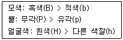
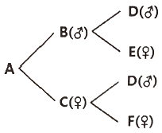
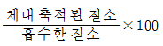
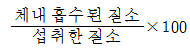
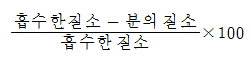
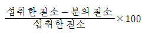
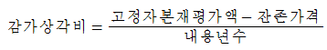

축산기사 (2021-05-15 기출문제)
1과목: 가축육종학
1. 선발차를 형질의 표현형 표준편차로 나눈 것은?
- 선발지수
- 선발반응
- 선발방법
- 선발강도
(정답률: 66%)

2. 육우의 실제 이유 시 체중이 130kg이고 생시체중이 30kg이며 실제 나이가 100일령일 때 보정된 2⑤일 체중은 몇 kg인가?
- 160kg
- 2⑤kg
- 235kg
- 270kg
(정답률: 69%)
3. 다음 중 불량한 재래종 가축의 능력을 비교적 짧은 시일 내에 일정 수준까지향상시키는 데 가장 효과적으로 이용할 수 있는 것은?
- 계통교배
- 누진교배
- 순종교배
- 상호역교배
(정답률: 75%)
4. 선발의 효과를 크게 하기 위한 조건이 아닌 것은?
- 유전력을 높인다.
- 선발차를 크게 한다.
- 세대간격을 길게 한다.
- 유전적 개량량이 커야 한다.
(정답률: 86%)
5. 암수 모두 무각인 서포크종 면양 수컷(hh)과 암수 모두 유각인 도셋혼종 면양 암컷 (HH)을 교배시키면 F1(Hh)은 암컷이 무각, 수컷이 유각으로 나타난다. 이와 같이 암컷과 수컷의 유전자형이 동일하지만 호르몬 등의 작용으로 표현형이 암수 간에 다르게 나타나는 유전 현상은?
- 반성유전
- 종성유전
- 한성유전
- 간성유전
(정답률: 58%)
6. X형질과 Y형질의 유전분산은 각각 4.0 및 9.0이며 이들 두 형질간 유전공분산은 3.0이다. 이들 두 형질간 유전 상관계수는?
- 0.08
- 0.23
- 0.50
- 0.70
(정답률: 65%)
7. 각 대립유전자의 빈도가 0.5로 같을 때, 소의 유전형질의 우열 관계는 [보기]와 같다. 모든 형질은 각각 독립적으로 유전된다고 했을 때, BbPpHh 유전자형을 가진 개체 간에서 태어나는 자손 중 흑색 피모, 무각, 검은 얼굴을 가진 개체가 나타날 확률은?

- 1/64
- 3/64
- 9/64
- 27/64
(정답률: 75%)
8. 하나의 유전자가 여러 형질을 지배하는 현상은?
- 유전자 다면작용
- 유전자 상위성
- 두 유전자좌 간의 연관
- 혈액형 유전자좌에서의 이형접합
(정답률: 83%)
9. 다음 젖소의 형질 중 유전력이 가장 낮은 것은?
- 번식능률
- 비유량
- 사료효율
- 유지율
(정답률: 61%)
10. 각 형질간의 상관관계가 경제가치를 고려하여 다수의 형질에 대하여 점수를 매겨 선발하는 방법은?
- 결합선발법
- 순차선발법
- 독립도태법
- 선발지수법
(정답률: 82%)
11. 계통 교잡 시 나타나는 일반 조합능력은 주로 유전자의 어떤 작용에 의존하는가?
- 우성 작용
- 초우성 작용
- 상위성 작용
- 상가성 작용
(정답률: 54%)
12. 다음 중 선발의 기능이 아닌 것은?
- 집단의 유전자 빈도를 변화시킨다.
- 집단의 유전자형 빈도를 변화시킨다.
- 새로운 유전자를 창조한다.
- 특정 유전자를 고정한다.
(정답률: 83%)
13. 다음 혈통도에서 A의 근교계수는 얼마인가? (단, FA=0이다.)

- 0.5
- 0.25
- 0.125
- 0.0625
(정답률: 65%)
14. 다음 형질 가운데서 잡종강세가 비교적 미약하게 발현되는 형질은?
- 생존율
- 강건성
- 번식능력
- 도체형질
(정답률: 44%)
15. 같은 축군에서 같은 연도, 같은 계절에 분만한 번식우를 가리키는 용어는?
- 종모우
- 검정우
- 동거우(herdmate)
- 동기우(contemporaries)
(정답률: 62%)
16. 잡종교배의 목적으로 가장 적절하지 않은 것은?
- 동형접합체 개체를 늘리기 위하여
- 품종 또는 계통 간의 상보성을 이용하기 위하여
- 잡종강세를 이용하기 위하여
- 유해한 열성인자의 발현을 가리기 위하여
(정답률: 72%)
17. 어느 젖소군의 평균 유량이 7500kg이며, 이 우군에 속하는 A라는 젖소가 한 비유기 동안에 8500kg의 우유를 생산하였다면 A라는 젖소의 유량에 대한 육종가는? (단, 유량에 대한 유전력(h2)은 0.3이라고 가정함)
- 7250kg
- 7800kg
- 8500kg
- 9550kg
(정답률: 75%)
18. 유전자형이 AaBbCc인 개체가 생산하는 배우자의 종류는 몇 가지인가? (단, A, B, C는 연관되어 있지 않다.)
- 3
- 6
- 8
- 9
(정답률: 75%)
19. 한우의 후대검정에 대한 설명으로 틀린 것은?
- 검정소 후대검정우의 선정기준은 후보씨수소 1두당 교배암소 40두 이상을 교배시켜 생산되고 유전자검사 결과 친자가 확인된 수송아지가 6두 이상 이어야 한다.
- 후대검정우에 대한 검정기간은 예비검정과 본검정으로 구분하며, 예비검정은 축군의 평균월령이 가급정 6개월령일 때 시작하여 300일동안 실시한다.
- 후대검정을 개시한 후보씨수소에 대하여는 보증씨수소로 선발되기 이전까지는 냉동정액을 생산, 보관하여야 한다.
- 후대검정우의 체중 측정 시기는 개시 시, 축군 평균 일령이 360일령, 540일령 및 종료 시로 4회 측정한다.
(정답률: 58%)
20. 순종교배(purebred breeding)에 해당하지 않는 것은?
- 근친교배(inbreeding)
- 이계교배(outbreeding)
- 무작위교배(random mating)
- 윤환교배(rotational crossing)
(정답률: 55%)
2과목: 가축번식생리학
21. 젖소에서 비외과적인 방법으로 수정란을 이식할 경우 가장 좋은 이식 부위는?
- 자궁각 선단
- 난관
- 자궁경관
- 난소
(정답률: 61%)
22. 포유가축에서 실시하는 발정동기화 기술의 장점에 대한 설명으로 틀린 것은?
- 분만관리와 자축관리가 용이해진다.
- 인공수정의 이용효율이 높아진다.
- 인건비와 약품비가 절약된다.
- 가축생산 시기의 조절이 가능하다.
(정답률: 73%)
23. 다음 중 정소상체의 기능이 아닌 것은?
- 정자의 생산
- 정자의 농축
- 정자의 성숙
- 정자의 저장
(정답률: 75%)
24. 일반적으로 홀스타인 젖소의 평균 임신기간은?
- 114일
- 179일
- 279일
- 330일
(정답률: 74%)
25. 다음 중 수탉의 1회 정액 사출량으로 옳은 것은?
- 0.1~1.0mL
- 5~10mL
- 20~50mL
- 150~250mL
(정답률: 66%)
26. 소에서 수정란을 자궁에서 이식할 때 임신율이 가장 높은 수정란의 발달 단계는?
- 4세포기
- 8세포기
- 배반포기
- 상실배기
(정답률: 78%)
27. 다음 중 어떤 경우에 정자형성(spermatogenesis)이 가장 심각하게 저하되는가?
- 비타민 A와 B의 겹핍 시
- 비타민 A와 E의 결핍 시
- 비타민 E와 K의 결핍 시
- 비타민 K와 D의 결핍 시
(정답률: 66%)
28. 소, 면양 및 돼지에서 초기배의 약 25~40%는 수정과 착상의 말기에서 소실된다. 이와 같은 초기배치사의 원인으로 틀린 것은?
- 발정호르몬과 황체호르몬의 불균형으로 인한 초기배 수송의 촉진 또는 지연으로 생긴다.
- 소, 면양 및 말에서 비유기중에 초기배치사가 발생되는 경우가 많다.
- 특히 돼지의 경우 초기배의 높은 사망률은 모축의 연령 때문에 일어나는 경우가 많다.
- 모체의 영양과 초기배치사는 무관하다.
(정답률: 78%)
29. 난자가 난관을 통과하는데 소요되는 시간이 가장 긴 것은? (단, 난관의 길이와는 상관관계가 없다.)
- 소
- 말
- 면양
- 개
(정답률: 61%)
30. 성숙한 포유가축의 자궁이 수행하는 일반적인 생리적 기능으로 적당하지 않은 것은?
- 난자와 정자의 수송
- 황체기능의 조절
- 교미
- 임신유지 및 분만개시
(정답률: 70%)
31. 정자의 수정능 획득에 관한 설명으로 틀린 것은?
- 정자는 암컷 생식기도관 내 분비액에 의해 수정능파괴인자가 제거됨으로써 수정능을 얻는다.
- 정자의 수정능파괴인자 제거를 위하여 인위적 처리를 할 시엔 동결이나 60℃정도의 열처리를 하면 된다.
- 정자의 수정능획득은 주로 자궁에서 개시되어 난관 협부에서 완성된다.
- 수정능을 획득한 정자는 형태적 변화로 첨체반응을 일으킨다.
(정답률: 62%)
32. 뇌하수체전엽 호르몬이 아닌 것은?
- 난포자극호르몬(FSH)
- 황체형성호르몬(LH)
- 성장호르몬(GH)
- 임부태반융모성 성선자극호르몬(hCG)
(정답률: 67%)
33. 계절번식 동물(특히 면양)의 성성숙에 가장 큰 영향을 미치는 요인은?
- 온도
- 영양상태
- 일조시간
- 정신적 요인
(정답률: 73%)
34. 유선의 발달에 대하여 바르게 설명한 것은?
- 규관과 유관분지가 유방 내에서 형성되는 시기는 임신중기이다.
- 유관주위에 유선포의 발달이 왕성하게 일어나는 시기는 임신말기이다.
- 유선상피세포가 모여 유두를 형성하는 시기는 출생이후이다.
- 유선상피세포의 증식이 왕성하게 일어나는 시기는 성성숙기에서 임신직전까지이다.
(정답률: 61%)
35. 소의 번식에서 관한 설명으로 틀린 것은?
- 성주기 길이는 평균 21일이다.
- 번식계절이 따로 없는 주년성 번식동물이다.
- 교배적기는 배란시기와 밀접한 관계가 있다.
- 배란은 대개 발정기에 일어난다.
(정답률: 59%)
36. 젖소 착유 시 유즙 분비를 촉진시키는 뇌하수체후엽 호르몬은?
- 에스트로겐
- 프로게스테론
- 프로락틴
- 옥시토신
(정답률: 61%)
37. 수정란 이식의 장점으로 옳은 것은?
- 종모축의 이용률을 증대시켜 가축의 능력을 개량할 수 있다.
- 종모축의 사양관리의 부담이 경감된다.
- 종모축의 유전능력을 조기에 판단할 수 있다.
- 종빈축이 보유하고 있는 난자를 최대로 활용할 수 있다.
(정답률: 57%)
38. 분만이 개시될 때 그 농도가 상대적으로 감소하는 호르몬은?
- PGF2a
- 프로게스테론
- 옥시토신
- 코르티솔
(정답률: 70%)
39. 정자의 침체 반응에 대한 설명으로 틀린 것은?
- 정자가 난자의 투명대를 통과하기 위해 일어나는 현상이다.
- 정자가 난구세포로부터 활력을 받게 된다.
- 아크로신(acrosin)이 투명대를 통과하도록 돕는다.
- 히알루로니다아제(hyaluronidase)라는 효소가 정자를 투명대 표면에 도달하는 것을 돕는다.
(정답률: 62%)
40. 다음 중 가축의 수정적기를 결정하는 가장 중요한 요인은?
- 발정축의 영양 상태
- 환경온도와 일조시간
- 발정축의 체중과 월령
- 배란이 일어나는 시기와 수정부위까지의 정자 수송시간
(정답률: 62%)
3과목: 가축사양학
41. 반추동물의 위 중에서 단위동물의 위와 같은 역할을 하는 것은?
- 제1위
- 제2위
- 제3위
- 제4위
(정답률: 69%)
42. 사료조리 가공방법 중 펠렛팅(Pelleting)에 관한 설명으로 틀린 것은?
- 건초나 곡류는 펠렛팅하기 전에 곱게 분쇄해야 한다.
- 곡류전분의 부분적인 젤라틴화가 일어난다.
- 선택적 채식을 가능하게 하고 사료 낭비를 줄인다.
- 지방함량이 높은 사료는 펠렛팅이 어렵다.
(정답률: 66%)
43. 산란계의 산란 2기 사양관리에 관한 설명으로 틀린 것은?
- 산란 2기는 성숙체중에 도달하는 42주령부터 72주령까지 30주간이다.
- 산란피크가 되는 시기이므로 영양소 함량이 높은 사료를 무제한 급여한다.
- 점등시간을 14시간 정도 유지한다.
- 총산란량 감소에 따라 사료급여량도 줄여야 한다.
(정답률: 64%)
44. 단백질 분해효소가 아닌 것은?
- 펩신(Pepsin)
- 트립신(Trypsin)
- 락타아제(Lactase)
- 레닌(Rennin)
(정답률: 66%)
45. 반추동물이 섭취한 탄수화물은 반추위내 미생물에 의하여 대부분 휘발성지방산(VFA)으로 전변되는데 이 중에서 포도당 합성에 주로 이용되는 휘발성지방산은?
- 프로피온산
- 초산
- 낙산
- 젖산
(정답률: 58%)
46. 육계사육에 있어서 5주령의 예상되는 평균사료 요구율은 약 어느 정도인가?
- 1.0
- 2.0
- 3.0
- 4.0
(정답률: 59%)
47. 단백질의 생물가 (BV:Biological Value)를 구하는 공식으로 옳은 것은?




(정답률: 45%)
48. 레시틴이나 플라스마로겐 등의 복합지질 성분으로 특히 자돈에게 필요한 것으로 알려져 있으며 메치오닌으로부터 합성될 수 있는 비타민은?
- 판토텐산
- 나이아신
- 콜린
- 시아노발라민
(정답률: 50%)
49. 필수지방산이며 프로스타글란딘(prostaglandin)의 전구물질인 것은?
- linoleic acid
- linolenic acid
- arachidonic acid
- stearic acid
(정답률: 58%)
50. 지방이 근육 내 침착되어 마블링이 많이 생성되도록 하기 위해 비육말기에는 어떤 사료를 급여해야 하는가?
- 고단백사료
- 고열량사료
- 고칼슘사료
- 고섬유소사료
(정답률: 71%)
51. 가축의 소화율에 관한 설명으로 옳은 것은?
- 조섬유나 실리카 등을 많이 함유하면 소화율이 낮아진다.
- 나이가 어린 가축일수록 소화율이 높다.
- 사료의 입자도는 소화율에 영향을 주지 않는다.
- 리그닌(lignin) 함량이 높으면 소화율도 높다.
(정답률: 66%)
52. 두과목초가 충분할 경우 추가 공급이 적게 요구되는 영양소는?
- 칼슘
- 인
- 요오드
- 셀레늄
(정답률: 52%)
53. 젖소의 초유와 정상유간의 성분상 가장 큰 차이는?
- 초유는 단백질과 유지방 함량이 높고 유당 함량은 낮다.
- 초유는 단백질 함량이 높고 유지방, 유당 함량이 낮다.
- 초유는 모든 유성분이 정상유보다 높다.
- 초유는 유지방 함량만이 정상유보다 높다.
(정답률: 64%)
54. 고능력 젖소에 있어서 건유기 사양관리의 중요성으로 틀린 것은?
- 비유기관의 활성유지
- 임신 중인 태아의 성장
- 비유기 모체 영양 손실의 회복
- 다음 착유기간을 위한 영양축적
(정답률: 60%)
55. 송아지에 있어서 가장 적합한 초유 급여 시기는?
- 출산 직후 12시간 이내
- 출산 후 13~24시간
- 출산 후 1~2일
- 출산 후 만 48시간 이후
(정답률: 75%)
56. 돼지의 회장소화율을 구하는 방법 중 특정내생손실과 기초내생손실을 모두 고려한 것은?
- 표준회장소화율
- 외관상회장소화율
- 진정회장소화율
- 조단백질소화율
(정답률: 62%)
57. 가소화영양소총량 계산 시 지방은 단백질이나 탄수화물보다 몇 배의 에너지를 더 발생시키는 것으로 계산하는가?
- 2.⑤배
- 2.15배
- 2.25배
- 2.35배
(정답률: 74%)
58. 젖소에서 우유의 지방성분을 합성하기 위한 전구물질과 그 주요 공급원이 알맞게 짝지어진 것은?
- acetate - 농후사료
- acetate - 조사료
- propionate - 조사료
- propionate – 농후사료
(정답률: 51%)
59. 부란실의 상대습도로 가장 적합한 것은?
- 80~85%
- 70~75%
- 60~65%
- 50~55%
(정답률: 60%)
60. 소화기관의 해부학적 기능 차이로 인해 혈당(blood glucose)치가 가장 낮을 것으로 예상되는 동물은?
- 돼지
- 말
- 닭
- 소
(정답률: 63%)
4과목: 사료작물학 및 초지학
61. 작부체계 설정 시 고려할 사항과 가장 거리가 먼 것은?
- 생산량
- 사료가치
- 노동력
- 파종량
(정답률: 46%)
62. 사일리지의 제조 시 나타나는 발효과정을 단계별로 설명한 것으로 틀린 것은?
- 제1기는 사일로에 충전된 재료 중의 산소와 당류가 식물세표의 호흡작용에 이용되어 탄산가스와 물과 열이 발생한다.
- 제2기는 사일로 내의 산소농도가 약 1%정도로 저하되고 동시에 식물에 부착되어 있던 호기성 세균이 활발하게 증식을 개시한다.
- 제3기는 식물과 호기성 세균의 호흡작용으로 사일로 내는 혐기 상태가 되면서 유산균의 증식이 개시된다.
- 제4기는 발효과정에서 유산균의 활동이 불충분하여 부패의 원인이 되는 낙산균이 등장하여 낙산발효가 일어난다.
(정답률: 53%)
63. 사일리지용 옥수수의 적절한 절단 길이는?
- 1~2cm
- 8~10cm
- 30~40cm
- 1~2m
(정답률: 57%)
64. 사료작물 중 직립형 줄기를 갖는 것은?
- 레드클로버
- 칡
- 화이트클로버
- 벳치
(정답률: 40%)
65. 덩굴성으로 옆으로 퍼져 생육하는 1년생 또는 월년생 두과작물로 분해가 빠르고 질소함량도 높아 녹비 및 사료작물용으로 재배하는 초종은?
- 헤어리베치
- 레드클로버
- 버즈풋트레포일
- 유채
(정답률: 44%)
66. Hetero형 유산균에 의한 사일리지 발효과정으로 틀린 것은?
- C6H12O6 → C3H6O3 + C2H5OH + CO2
- 3C6H12O6 + H2O → C3H6O3 + 2C6H8(OH)6 + CH3COOH + CO2
- C5H10O5 → C3H6O3 + CH3COOH
- 2C6H12O6 + C6H12O6 → C3H6O3 + 2C6H8(OH)6 + CH3COOH + CH4
(정답률: 53%)
67. 초지잡초 중 애기수영에 관한 설명으로 옳은 것은?
- 우리나라 원산으로 가축의 기호성이 좋기 때문에 별다른 방제가 필요 없다.
- 콩과이기 때문에 뿌리혹박테리아를 이용하여 질소를 고정하므로 토양을 비옥하게 한다.
- 한 포기에서 연간 1000 ~ 10000개의 종자를 생성하며 종자와 뿌리로 번식하여 초지부실과를 촉진한다.
- 토양이 비옥하고 알칼리성 토양에 특히 잘 번성하므로 퇴비나 비료를 주지 않으면 자연히 없어진다.
(정답률: 57%)
68. 윤환방목을 위한 이동식 목책으로 가장 적합한 것은?
- 나무목책
- 전기목책
- 철주목책
- 콘크리트목책
(정답률: 51%)
69. 옥수수 재배 시 줄기가 가늘어져 도복되기 쉽고 암이삭이 생기지 않는 개체가 생기며, 암이삭이 생긴다 해도 발육이 미약해지는 경우는?
- 지나치게 밀식했을 때
- 시비량이 많았을 때
- 파종기가 늦어졌을 때
- 복토를 너무 깊게 했을 때
(정답률: 62%)
70. 화본과 목초의 일반적 특징에 대한 설명으로 틀리 것은?
- 근계는 섬유모양의 수염뿌리로 되어 있다.
- 줄기는 대체로 속이 비어있고, 뚜렸한 마디를 가진다.
- 잎은 복합엽이고, 엽맥은 그물모양이다.
- 열매는 씨방벽에 융합되어 있는 하나의 종자를 가진다.
(정답률: 65%)
71. 목초 중 식물 분류학상 김의털(Festuca) 속인 것은?
- 톨 페스큐
- 톨오트 그라스
- 티머시
- 리드 카나리그라스
(정답률: 60%)
72. 사료 작물로서 옥수수의 일반적인 특성이 아닌 것은?
- 1년생 화본과이다.
- 일반적으로 높은 기온과 많은 양의 일조가 필요한 작물이 아니다.
- 일평균 기온 21~27℃(야간 13℃ 이상)가 최소한 140일정도 지속되어야 최고 수확을 올릴 수 있다.
- 생육적지는 비옥하고 토심이 깊으며 유기질이 풍부한 사질양토이다.
(정답률: 58%)
73. 목초나 사료작물 등을 식물학적으로 분류하여 이용하고 있는 학명에 대한 설명으로 틀린 것은?
- 모든 과학적 지식을 동원하여 결정되기 때문에 영구불변하다.
- 속명과 종명으로 구성되어 이명법이라고도 한다.
- 다른 단어와 구별하기 우하여 속명과 종명은 이탤릭체로 쓴다.
- 전 세계가 공통으로 사용하며 속명의 첫 글자는 대문자로, 종명은 소문자로 쓴다.
(정답률: 72%)
74. 방목 후 초지의 청소베기 효과로 거리가 먼 것은?
- 잡초 발생을 줄인다.
- 기호성을 높일 수 있다.
- 불식목초(不食牧草)를 줄인다.
- 벼과 작물의 비율을 감소시킨다.
(정답률: 65%)
75. 옥수수 사일리지의 수확 최적기에 해당되지 않는 시기는?
- 단위면적당 최대의 건물수량이 기대되는 시기
- 사일로에 충전할 때 단위 면적당 최대의 건물을 저장할 수 있는 시기
- 사일리지의 가소화영양소 총량 함량이 가장 높은 시기
- 사일리지로 만들었을 때 사일로로부터 침출액이 가장 많이 나오는 시기
(정답률: 66%)
76. 옥수수 사일리지를 평가하기 위하여 사일로를 개봉하고 깊숙한 곳에서 시료를 채취하여 손으로 꽉 쥐었더니 즙액이 한 두 방울 떨어지고 손에서는 톡 쏘는 듯한 산취가 오래 동안 가시지 않았다. 이 사일리지에 대한 설명으로 가장 올바른 것은?
- 너무 늦게 수확하여 재료의 건물율이 너무 높고 아마도 곰팡이나 효모가 많이 있을 것이다.
- 수분함량에 비하여 재료의 절단 길이가 길고 곡분과 같은 첨가제를 과도하게 이용하였을 것이다.
- 조기수확으로 수분함량이 너무 높고 과발효 또는 젖산 발효보다 낙산발효가 더 많이 일어났을 것이다.
- 충분한 예건과 유산균 첨가제를 이용하였기 때문에 삼출액에 의한 손실은 거의 없을 것이다.
(정답률: 66%)
77. 내한성이 약하여 주로 남부지방에서 이용되는 사료작물로 사료가치가 높고 여러 번 수확할 수 있는 초종은?
- 호밀
- 귀리
- 사료용 피
- 이탈리안라이그라스
(정답률: 66%)
78. 사일리지 조제에 있어서 발효를 순조롭게 진행시키기 위한 재료의 수분은 몇 %가 적당한가? (단, 벙커 사일로의 경우로 한다.)
- 38~42%
- 55~60%
- 68~72%
- 80~85%
(정답률: 59%)
79. 칼륨 함량이 60%인 염화칼륨 비료를 이용하여 칼륨성분 120kg/ha를 추비로 주려고 할 때 필요한 비료 총량은?
- 72kg/ha
- 200kg/ha
- 240kg/ha
- 300kg/ha
(정답률: 60%)
80. 건초의 수분함량으로 가장 알맞은 것은?
- 15%이하
- 20~25%
- 30~35%
- 40~45%
(정답률: 70%)
5과목: 축산경영학 및 축산물가공학
81. 축산경영 조직의 결정에 영향을 미치는 요인과 가장 거리가 먼 것은?
- 자연적 조건
- 사회ㆍ경제적조건
- 개인적 사정
- 고용노동력의 능력
(정답률: 43%)
82. 축산경영에서 생산비와 경영비의 차이를 가장 바르게 설명한 것은?
- 생산비에 감가상각비를 제한 것이 경영비가 된다.
- 생산비에 내급비를 합한 것이 경영비가 된다.
- 경영비에 내급비를 합한 것이 생산비가 된다.
- 경영비에 고정비와 유동비를 더하면 생산비가 된다.
(정답률: 36%)
83. 다음의 고정 자본재 감가상각비 계산 공식은 무슨 방법에 의한 것인가?

- 정율법
- 잔액법
- 정액법
- 급수법
(정답률: 64%)
84. 축산경영의 목표에 대한 내용으로 틀린 것은?
- 자기소유토지에 대한 지대의 최대화
- 조직의 최대화
- 자가노동보수의 최대화
- 순수익의 최대화
(정답률: 54%)
85. 다음 중 축산소득의 공식으로 옳은 것은?
- 축산소득=총수입-생산비
- 축산소득=총수입-경영비
- 축산소득=총수입-경영비-자기자본이자
- 축산소득=총수입-생산비-자기자본이자
(정답률: 45%)
86. 축산경영비에 포함되지 않는 것은?
- 고용노임
- 감가상각비
- 제 재료비
- 자기자본이자
(정답률: 58%)
87. 유통마진을 산출하는 계산식으로 옳은 것은?
- 생산자 수취가격 - 판매비용
- 소비자 지불가격 – 생산자 수취가격
- 생산자 수취가격 – 소비자 지불가격
- 소비자 지불가격 + 생산자 수취가격
(정답률: 60%)
88. 다음 중 유동비용에 해당하는 것은?
- 지대
- 자본에 대한 이자
- 감가상각비
- 방역치료비
(정답률: 64%)
89. 어느 축산농가의 연간 속득이 1200만원이고, 노동투입 시간이 400시간이라면 노동생산성은 시간당 얼마인가?
- 3만원
- 4만원
- 5만원
- 7만원
(정답률: 74%)
90. 생산함수에서 평균생산물과 한계생산물의 관계를 바르게 설명한 것은?
- 평균생산물이 증가하면 한계생산물은 감소한다.
- 한계생산물이 평균생산물보다 클 경우 평균생산물은 증가한다.
- 한계생산물이 평균생산물보다 작을 경우 한계생산물은 증가한다.
- 한계생산물과 평균생산물이 동일할 경우 평균생산물은 최소가 된다.
(정답률: 54%)
91. 홀스타인 젖소에서 착유한 우유의 평균비중(15℃)은?
- 1.638
- 1.⑤5
- 1.032
- 0.944
(정답률: 60%)
92. 고기를 숙성시키는 가장 중요한 목적은?
- 육색의 증진
- 보수성 증진
- 위생안전성 증진
- 맛과 연도의 개선
(정답률: 73%)
93. 식육의 전기자극(electrical stimulation) 효과가 아닌 것은?
- 히트링(heat-ring) 생성
- 저온단축 방지
- 육색 향상
- 연도 증진
(정답률: 51%)
94. 사상조직(sandy)은 가당연유의 품질저하에 가장 큰 요인이다. 사상조직과 관련이 깊은 성분은?
- 카세인
- 유당
- 유지방
- 효소
(정답률: 49%)
95. 우유의 살균(LTLT 또는 HTST)이 이루어졌는지의 여부를 검사하는데 널리 쓰이는 시험법은?
- 포스파타아제 테스트
- 알코올 테스트
- 휘발성 지방산 측정 테스트
- 밥콕 테스트
(정답률: 61%)
96. 다음 중 축산물에 대한 설명으로 올바른 것은?
- 식육, 포장육, 원유 및 유가공품을 포함하나 식용란과 알가공품은 포함되지 않는다.
- 식육이란 식용을 목적으로 하는 가축의 지육, 정육, 내장 및 그 밖의 부분을 말한다.
- 식육에는 어육 및 야생동물의 수렵육은 포함되지 않는다.
- 뼈는 비가식부위로 식육에 포함되지 않는다.
(정답률: 59%)
97. 근육이 식육으로 전환하는 과정에서 글리코겐이 분해되어 만들어지는 것은?
- 젖산(lactic acid)
- 아세트산(acetic acid)
- 시트릭산(citric acid)
- 스테아릭산(stearic acid)
(정답률: 59%)
98. 가당연유와 가당탈지연유에 첨가할 수 있는 첨가물이 아닌 것은?
- 설탕
- 포도당
- 구연산
- 과당
(정답률: 73%)
99. 신 맛과 청량감을 부여하고 염지반응을 촉진시켜 가공시간을 단축할 수 있어 주로 생햄이나 살라미 제품에 이용되는 것은?
- 염미료
- 감미료
- 산미료
- 지미료
(정답률: 65%)
100. 육제품 제조 시 물의 역할이 아닌 것은?
- 원가 절감
- 온도 조절작용
- 원료 혼합물의 점도 조절
- 육단백질 결합 강화
(정답률: 55%)